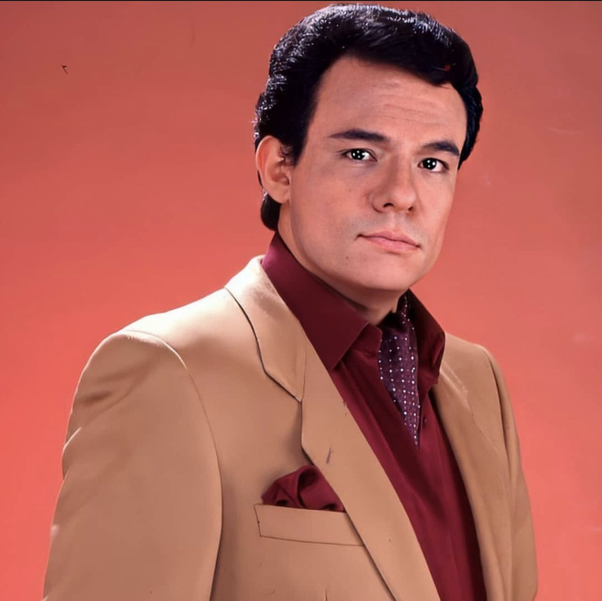

La musica de J Balvin me gusta porque tiene varias canciones de amor y otras que son alegres y tiene buen
ritmo aparte en algunas canciones menciona a Dios y eso me gusta ya que son
pocos cantantes que lo hacen
y es un Urbano latino donde se expresa bien y en pocas canciones dice palabras que no son adecuadas pero
me gustan bastante porque
en una fiesta ponen ambiente y aparte es uno de mis cantantes favoritos.
Pues el fenómeno de Feid ya ha traspasado fronteras y ha hecho que el cantante sea uno de los exponentes
del reguetón más importantes
de la actualidad.Basa su éxito en una personalidad descomplicada, fresca,
muy cercana a la gente, que lo identifica como una “Nea”, que canta como habla y como vive.Y eso hace
tenga varios seguidoes por su buena musica ya que tiene un buen ritmo y es muy movida, y se hizo mas
con el concierto que dio en Honduras en Tegucigalpa(F.M)eran cantidades de personas que asitieron al concierto.
Nacido en una familia de músicos, José comenzó su carrera musical en su adolescencia tocando la guitarra
y cantando serenatas.
Estas canciones me gustan ya que son relajantes y la letras es algo que llega al corazon
y se ve que lo canta con sentimiento y por eso el Príncipe de la canción
se colocó como el cantante latinoamericano
más influyente, exitoso y cotizado de esa época.como solista despegó cuando en el segundo Festival de la Canción
Latina, hizo una
excelente interpretación de una de sus más famosas canciones: El Triste.

subir